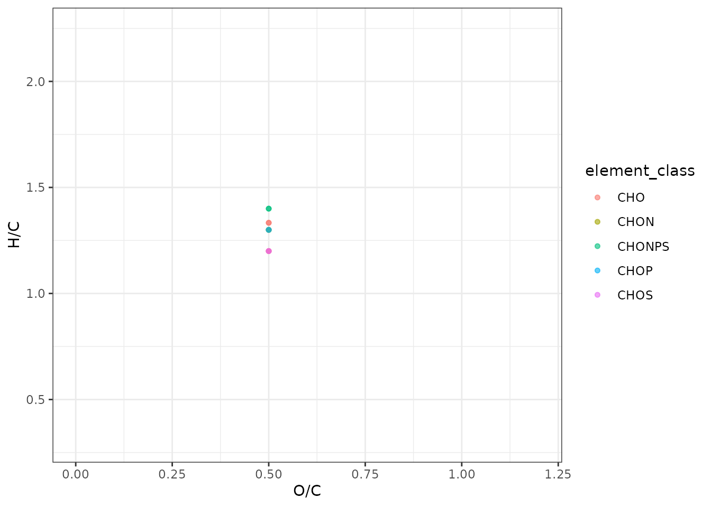
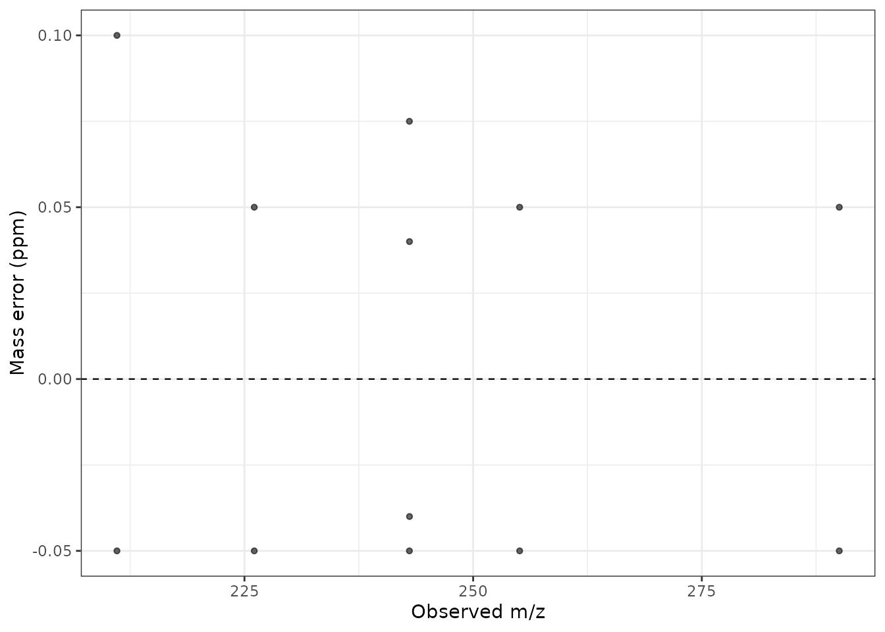
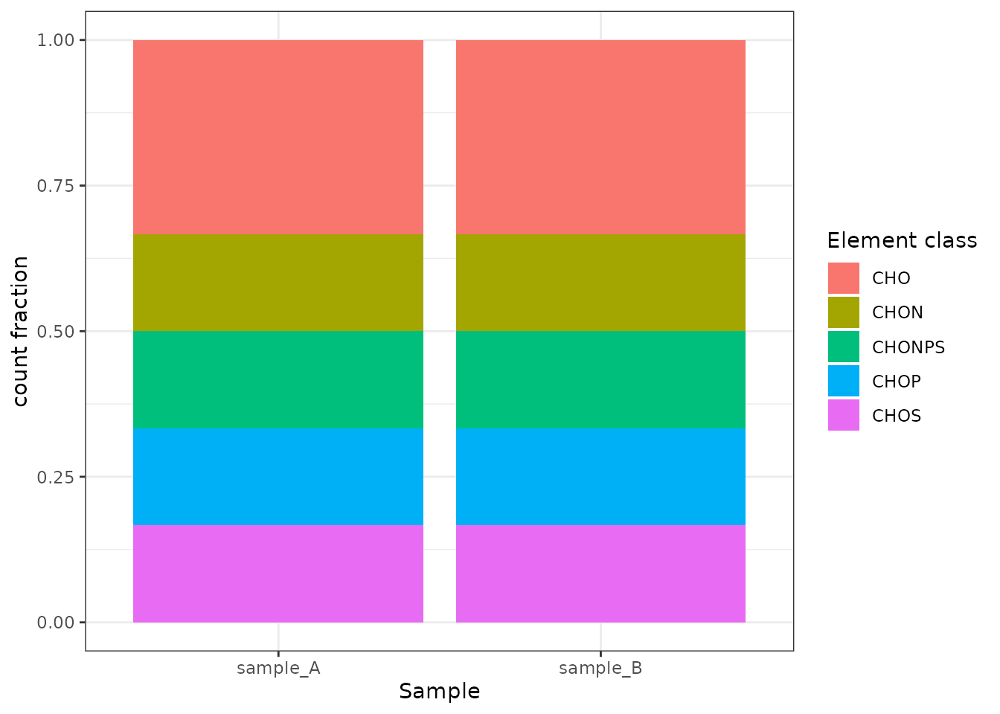
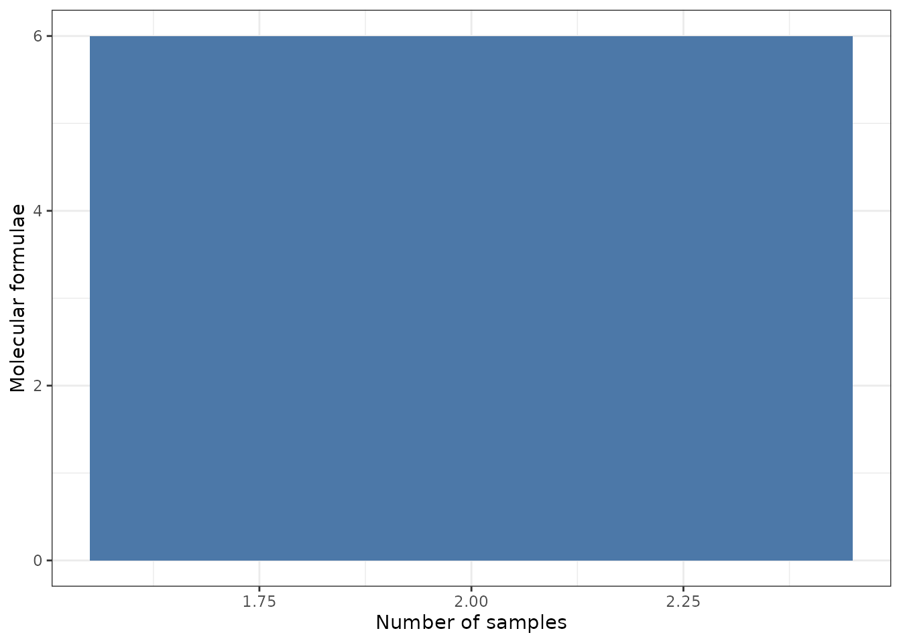

All plot functions return editable ggplot objects and attach the
plotted data as attr(plot, "plot_data"). Set
return_data = TRUE to receive both explicitly.
library(DOMformulaR)
path <- system.file("extdata", "simulated_peaks.csv", package = "DOMformulaR")
cfg <- read_dom_config(system.file("extdata", "example_config.yml", package = "DOMformulaR"))
result <- run_dom_workflow(path, cfg)
plot_van_krevelen(result$assigned_formulas)
plot_mass_error(result$assigned_formulas)
plot_element_classes(result$assigned_formulas)
plot_shared_formulas(result$assigned_formulas)